<!DOCTYPE html>
<html lang="en">
  <head>
    <meta charset="utf-8" />
    <meta name="viewport" content="width=device-width, initial-scale=1.0, maximum-scale=1.0, user-scalable=no" />

    <title></title>
    <link rel="stylesheet" href="dist/reveal.css" />
    <link rel="stylesheet" href="dist/theme/serif.css" id="theme" />
    <link rel="stylesheet" href="plugin/highlight/zenburn.css" />
	<link rel="stylesheet" href="css/layout.css" />
	<link rel="stylesheet" href="plugin/customcontrols/style.css">
	<link rel="stylesheet" href="plugin/chalkboard/style.css">


    <script defer src="dist/fontawesome/all.min.js"></script>

	<script type="text/javascript">
		var forgetPop = true;
		function onPopState(event) {
			if(forgetPop){
				forgetPop = false;
			} else {
				parent.postMessage(event.target.location.href, "app://obsidian.md");
			}
        }
		window.onpopstate = onPopState;
		window.onmessage = event => {
			if(event.data == "reload"){
				window.document.location.reload();
			}
			forgetPop = true;
		}

		function fitElements(){
			const itemsToFit = document.getElementsByClassName('fitText');
			for (const item in itemsToFit) {
				if (Object.hasOwnProperty.call(itemsToFit, item)) {
					var element = itemsToFit[item];
					fitElement(element,1, 1000);
					element.classList.remove('fitText');
				}
			}
		}

		function fitElement(element, start, end){

			let size = (end + start) / 2;
			element.style.fontSize = `${size}px`;

			if(Math.abs(start - end) < 1){
				while(element.scrollHeight > element.offsetHeight){
					size--;
					element.style.fontSize = `${size}px`;
				}
				return;
			}

			if(element.scrollHeight > element.offsetHeight){
				fitElement(element, start, size);
			} else {
				fitElement(element, size, end);
			}		
		}


		document.onreadystatechange = () => {
			fitElements();
			if (document.readyState === 'complete') {
				if (window.location.href.indexOf("?export") != -1){
					parent.postMessage(event.target.location.href, "app://obsidian.md");
				}
				if (window.location.href.indexOf("print-pdf") != -1){
					let stateCheck = setInterval(() => {
						clearInterval(stateCheck);
						window.print();
					}, 250);
				}
			}
	};


        </script>
  </head>
  <body>
    <div class="reveal">
      <div class="slides"><section  data-markdown><script type="text/template"><!-- .slide: class="drop" -->
<div class="" style="position: absolute; left: 0px; top: 0px; height: 1080px; width: 1920px; min-height: 1080px; display: flex; flex-direction: column; align-items: center; justify-content: center" absolute="true">

## ANCOVA: Sharing Session

<br>
<br>

<div class="" style="display: flex; flex-direction: column; align-items: center; justify-content: space-evenly" align="justify">

Author: Pang Khong Yun
<split> Subject: PSY5024 Intermediate & Advanced Statistics  
Lecturer: Dr Lin Mei Hua
</div>
</div></script></section><section  data-markdown><script type="text/template"><!-- .slide: class="drop" -->
<div class="" style="position: absolute; left: 0px; top: 0px; height: 1080px; width: 1920px; min-height: 1080px; display: flex; flex-direction: column; align-items: center; justify-content: center" absolute="true">

## ANCOVA 

<div class="has-light-background" style="background-color: lightblue" >

**ANCOVA** stands for “analysis of covariance.”. It is used to determine whether or not there is a statistically significant difference between the means of three or more independent groups when control with variables.
</div>
</div></script></section><section  data-markdown><script type="text/template"><!-- .slide: class="drop" -->
<div class="" style="position: absolute; left: 0px; top: 0px; height: 1080px; width: 1920px; min-height: 1080px; display: flex; flex-direction: column; align-items: center; justify-content: center" absolute="true">

<div class="has-light-background" style="background-color: pink" >

## Background
<br>
<br>

- Amid the lockdown during the COVID-19 pandemic, online socialization had become increasingly important as physical and face-to-face activities were restricted <!-- .element: class="fragment" data-fragment-index="1" -->
-  Distance or online learning was therefore implemented to prevent the spread of the virus in educational settings. <!-- .element: class="fragment" data-fragment-index="2" -->
-  There is an exhibition of growing dependence on technology among adolescents <!-- .element: class="fragment" data-fragment-index="3" -->
- There were a significant increase in cyberbullying incidents during the pandemic <!-- .element: class="fragment" data-fragment-index="4" -->
-  Cybervictimization is associated with depression and anxiety <!-- .element: class="fragment" data-fragment-index="5" -->
</div>
</div></script></section><section  data-markdown><script type="text/template"><!-- .slide: class="drop" -->
<div class="" style="position: absolute; left: 0px; top: 0px; height: 1080px; width: 1920px; min-height: 1080px; display: flex; flex-direction: column; align-items: center; justify-content: center" absolute="true">

<div class="has-light-background" style="background-color: lightblue; position: absolute; left: 0%; top: 0%; height: 20%; width: 100%; display: flex; flex-direction: column; align-items: center; justify-content: center" >

## Research Hypotheses
</div>

<div class="" style="display: flex; flex-direction: column; align-items: center; justify-content: space-evenly" align="justify">

H1: Individuals who have  **cyberbullting experience** since the COVID-19 pandemic is associated with higher **anxiety**  when controlling for **depression**.
</div>
</div></script></section><section  data-markdown><script type="text/template"><!-- .slide: class="drop" -->
<div class="" style="position: absolute; left: 0px; top: 0px; height: 1080px; width: 1920px; min-height: 1080px; display: flex; flex-direction: column; align-items: center; justify-content: center" absolute="true">

## Simulate data for anxiety

```{r}
library(haven)
library(tidyverse)
Clean_Data_Yellow_Survey = read_sav("...")
Clean_Data_Yellow_Survey`$DS4 = as.factor(Clean_Data_Yellow_Survey$`DS4)
# Generate residual for depression
set.seed(422)
error_term = rnorm(1755,0,5)
anxiety = 2 + 3*Clean_Data_Yellow_Survey$Total_Depression + error_term
dt = data.frame('depression' = Clean_Data_Yellow_Survey$Total_Depression,
                 'CE' = Clean_Data_Yellow_Survey$DS4,
                 'anxiety' = anxiety)
```
</div></script></section><section  data-markdown><script type="text/template"><!-- .slide: class="drop" -->
<div class="" style="position: absolute; left: 0px; top: 0px; height: 1080px; width: 1920px; min-height: 1080px; display: flex; flex-direction: column; align-items: center; justify-content: center" absolute="true">

## Example Data

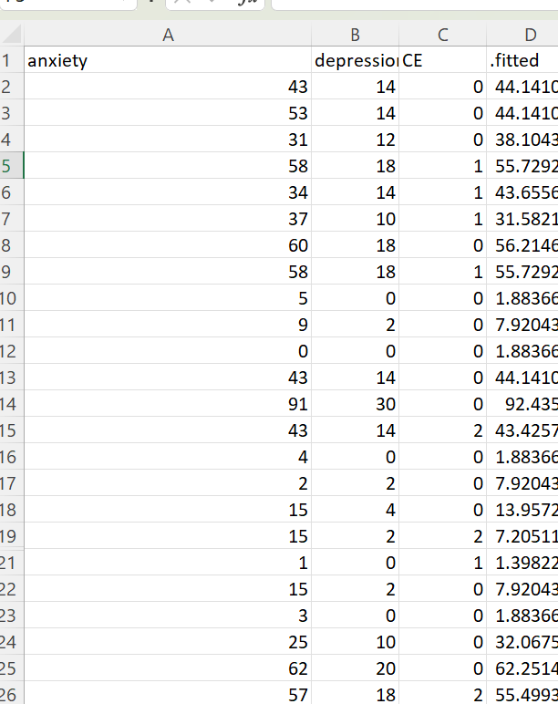
</div></script></section><section  data-markdown><script type="text/template"><!-- .slide: class="has-light-background drop" data-background-color="lightyellow" -->
<div class="" style="position: absolute; left: 0px; top: 0px; height: 1080px; width: 1920px; min-height: 1080px; display: flex; flex-direction: column; align-items: center; justify-content: center" absolute="true">

## Robustness Checks
</div></script></section><section  data-markdown><script type="text/template"><!-- .slide: class="has-light-background drop" data-background-color="lightyellow" -->
<div class="" style="position: absolute; left: 0px; top: 0px; height: 1080px; width: 1920px; min-height: 1080px; display: flex; flex-direction: column; align-items: center; justify-content: center" absolute="true">

### The Presence of Outliers

```{r}
# install.packages("broom")
library(broom)
# Outlier
model <- lm(anxiety ~ depression + CE, data = dt)
model.data <- augment(model) %>% 
  mutate(index = 1:n()) 
# See the value of cook distance, outlier if more than 1
model.data %>% top_n(3, .cooksd)
# See deeper into the standard residuals
ggplot(model.data, aes(index, .std.resid)) + 
  geom_point(aes(color = depression), alpha = .5) +
  theme_bw()
# Remove influential outliers
dt1 <- model.data %>% 
  filter(abs(.std.resid) <= 3)
ggplot(dt1, aes(index, .std.resid)) + 
  geom_point(aes(color = depression), alpha = .5) +
  theme_bw()
```

<split left= "8" right= "10" gap= "1">
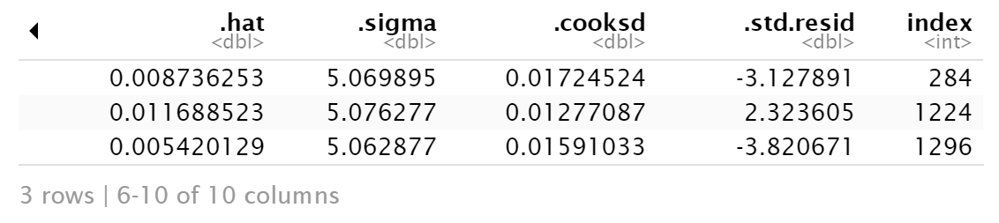


- Cook distance
	- cases have *threshold value of > 1* is influential outliers
- **No influential outlier**
</split>
</div></script></section><section  data-markdown><script type="text/template"><!-- .slide: class="drop" -->
<div class="" style="position: absolute; left: 0px; top: 0px; height: 1080px; width: 1920px; min-height: 1080px; display: flex; flex-direction: column; align-items: center; justify-content: center" absolute="true">

### The Presence of Outliers

<split left= "8" right= "10" gap= "1">
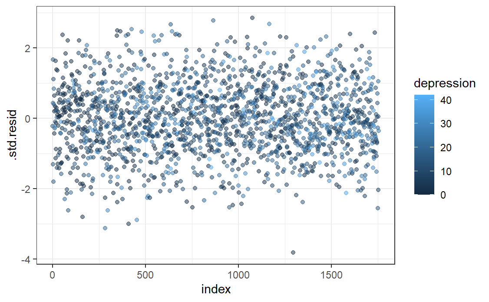


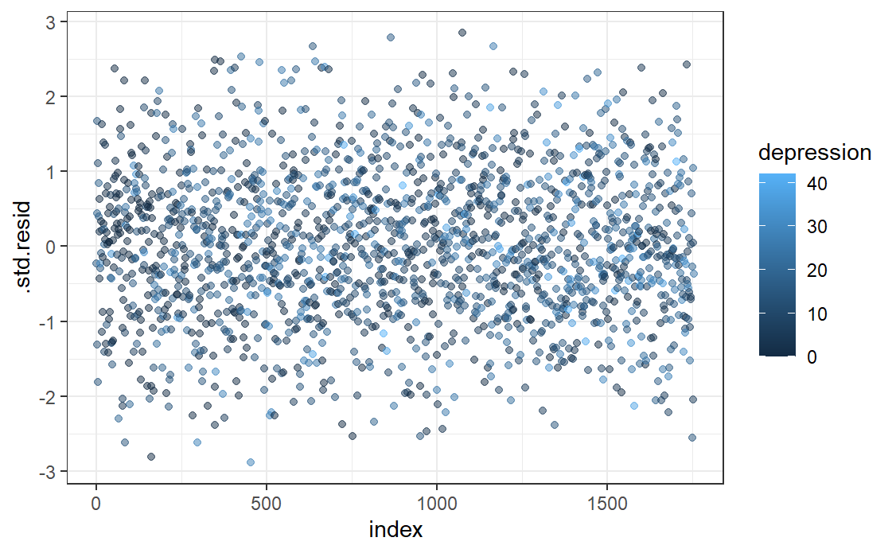

</split>

*Standard residuals > 3 is influential outliers*

I remove *3* influential outliers. The final sample size is **1752**.
</div></script></section><section  data-markdown><script type="text/template"><!-- .slide: class="has-light-background drop" data-background-color="lightyellow" -->
<div class="" style="position: absolute; left: 0px; top: 0px; height: 1080px; width: 1920px; min-height: 1080px; display: flex; flex-direction: column; align-items: center; justify-content: center" absolute="true">

## Normality of Variables

```{r}
# Normality
library(moments)
skewness(dt1$anxiety)
skewness(dt1$depression)
kurtosis(dt1$anxiety)
kurtosis(dt1$depression)
```

<split left= "8" right= "12" gap= "1">
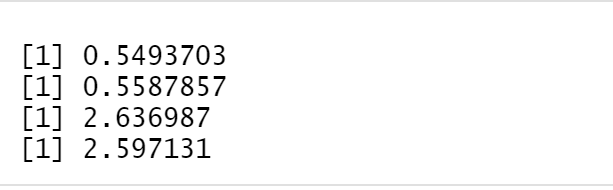


- Skewness and kurtosis
	- *skewness value > 3* is non-normal
	- *kurtosis value > 10* is non-normal
-  Depression and anxiety are normally distributed
</split>
</div></script></section><section  data-markdown><script type="text/template"><!-- .slide: class="has-light-background drop" data-background-color="lightyellow" -->
<div class="" style="position: absolute; left: 0px; top: 0px; height: 1080px; width: 1920px; min-height: 1080px; display: flex; flex-direction: column; align-items: center; justify-content: center" absolute="true">

## Linearity between covariate and dependent variables

```{r}
# Linearity test
ggscatter(
  dt1, x = "depression", y = "anxiety",
  color = "CE", add = "reg.line"
)+
  stat_regline_equation(
    aes(label =  paste(..eq.label.., ..rr.label.., sep = "~~~~"), color = CE)
  )
```
<split left= "8" right= "10" gap= "1">
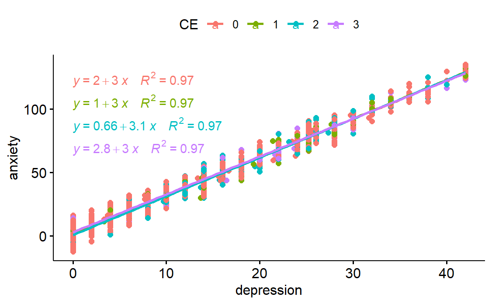


- Depression and anxiety is linearly dependent for all groups

</split>
</div></script></section><section  data-markdown><script type="text/template"><!-- .slide: class="has-light-background drop" data-background-color="pink" -->
<div class="" style="position: absolute; left: 0px; top: 0px; height: 1080px; width: 1920px; min-height: 1080px; display: flex; flex-direction: column; align-items: center; justify-content: center" absolute="true">

##  The covariate(s) and the factor variable(s) are independent

```{r}
# The covariate(s) and the factor variable(s) are independent
dt1 %>% anova_test(depression ~ CE)
```
<split left= "8" right= "10" gap= "1">
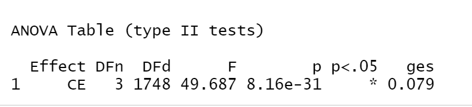


- **Unfortunately**, they are statistically significant
	- cause type II error
	- decrease the effect size of the main effect
- Resemblance of instrumental variable
	- imply causation in cross-sectional data
</div></script></section><section  data-markdown><script type="text/template"><!-- .slide: class="has-light-background drop" data-background-color="lightyellow" -->
<div class="" style="position: absolute; left: 0px; top: 0px; height: 1080px; width: 1920px; min-height: 1080px; display: flex; flex-direction: column; align-items: center; justify-content: center" absolute="true">

## Homogeneity of variance

```{r}
# Homogeneity of variances
library(car)
leveneTest(anxiety~CE, data = dt1)
```

<split left= "8" right= "10" gap= "1">
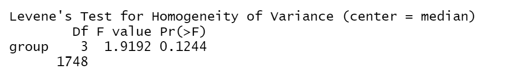


- Levene test showed insignificant result
	- the variance among the group are roughly equal
</div></script></section><section  data-markdown><script type="text/template"><!-- .slide: class="has-light-background drop" data-background-color="lightyellow" -->
<div class="" style="position: absolute; left: 0px; top: 0px; height: 1080px; width: 1920px; min-height: 1080px; display: flex; flex-direction: column; align-items: center; justify-content: center" absolute="true">

## Homogeneity of regression slopes

```{r}
# Homogeneity of regression slopes
dt1 %>% anova_test(anxiety ~ CE*depression)
```
<split left= "10" right= "6" gap= "1">
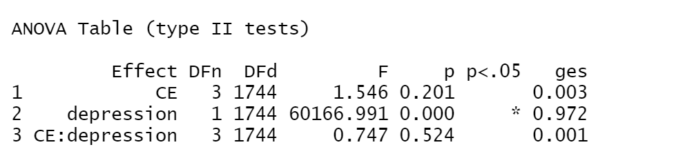


- ANOVA test found depression do not interact with cyberbullying experience
</div></script></section><section  data-markdown><script type="text/template"><!-- .slide: class="has-light-background drop" data-background-color="lightblue" -->
<div class="" style="position: absolute; left: 0px; top: 0px; height: 1080px; width: 1920px; min-height: 1080px; display: flex; flex-direction: column; align-items: center; justify-content: center" absolute="true">

## SPSS Practice
</div></script></section><section  data-markdown><script type="text/template"><!-- .slide: class="has-light-background drop" data-background-color="lightblue" -->
<div class="" style="position: absolute; left: 0px; top: 0px; height: 1080px; width: 1920px; min-height: 1080px; display: flex; flex-direction: column; align-items: center; justify-content: center" absolute="true">

## Step 1: Click "Analyze" and "General Linear Model"
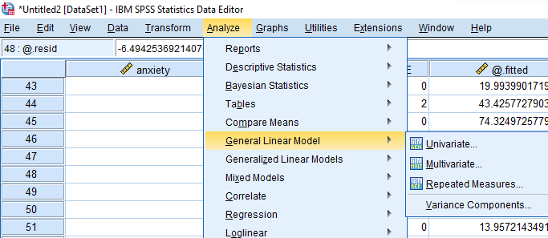
</div></script></section><section  data-markdown><script type="text/template"><!-- .slide: class="has-light-background drop" data-background-color="lightblue" -->
<div class="" style="position: absolute; left: 0px; top: 0px; height: 1080px; width: 1920px; min-height: 1080px; display: flex; flex-direction: column; align-items: center; justify-content: center" absolute="true">

## Step 2: Click "Univariate"
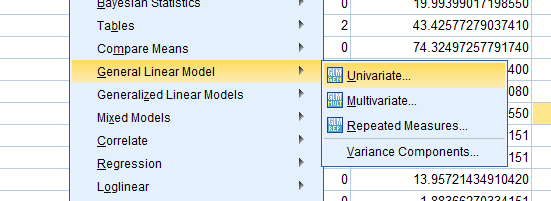
</div></script></section><section  data-markdown><script type="text/template"><!-- .slide: class="has-light-background drop" data-background-color="lightblue" -->
<div class="" style="position: absolute; left: 0px; top: 0px; height: 1080px; width: 1920px; min-height: 1080px; display: flex; flex-direction: column; align-items: center; justify-content: center" absolute="true">

## Step 3: Insert variables
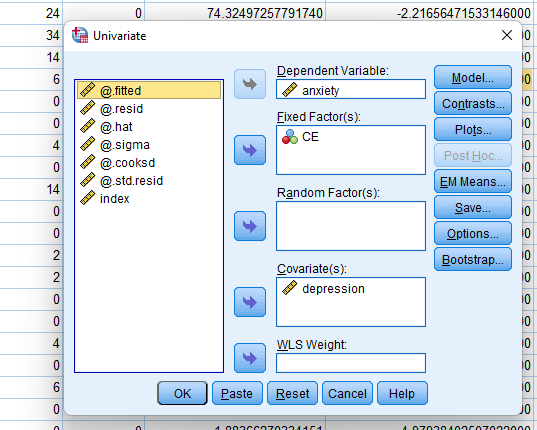
</div></script></section><section  data-markdown><script type="text/template"><!-- .slide: class="has-light-background drop" data-background-color="lightblue" -->
<div class="" style="position: absolute; left: 0px; top: 0px; height: 1080px; width: 1920px; min-height: 1080px; display: flex; flex-direction: column; align-items: center; justify-content: center" absolute="true">

## Step 4: Click "Options..."
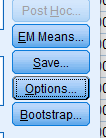
</div></script></section><section  data-markdown><script type="text/template"><!-- .slide: class="has-light-background drop" data-background-color="lightblue" -->
<div class="" style="position: absolute; left: 0px; top: 0px; height: 1080px; width: 1920px; min-height: 1080px; display: flex; flex-direction: column; align-items: center; justify-content: center" absolute="true">

### Step 5: Check "Descriptive statistics" and "Estimates of Effect Size"
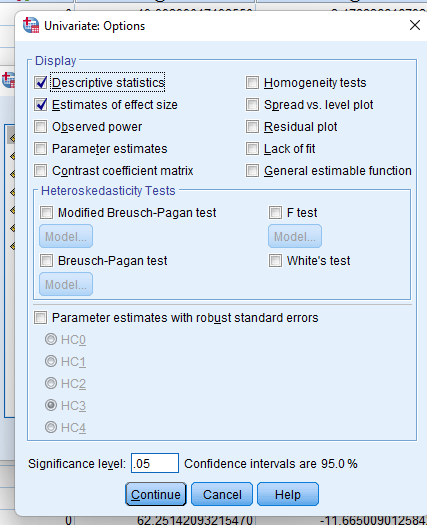
</div></script></section><section  data-markdown><script type="text/template"><!-- .slide: class="has-light-background drop" data-background-color="lightblue" -->
<div class="" style="position: absolute; left: 0px; top: 0px; height: 1080px; width: 1920px; min-height: 1080px; display: flex; flex-direction: column; align-items: center; justify-content: center" absolute="true">

## SPSS Syntax

```{spss}
# Logistic regression 
UNIANOVA anxiety BY CE WITH depression
/METHOD=SSTYPE(3)
/INTERCEPT=INCLUDE
/PRINT ETASQ DESCRIPTIVE
/CRITERIA=ALPHA(.05)
/DESIGN=depression CE.
```
</div></script></section><section  data-markdown><script type="text/template"><!-- .slide: class="has-light-background drop" data-background-color="lightblue" -->
<div class="" style="position: absolute; left: 0px; top: 0px; height: 1080px; width: 1920px; min-height: 1080px; display: flex; flex-direction: column; align-items: center; justify-content: center" absolute="true">

## Result
<split left= "10" right= "6" gap= "1">
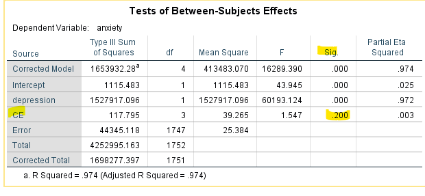


- The p value is equal to 0.2, therefore insignificant
- The efffect size is 0.003 which is extremely low
- The covariate has a high effect size and significant
- Bias in the result
</split>
</div></script></section><section  data-markdown><script type="text/template"><!-- .slide: class="drop" -->
<div class="" style="position: absolute; left: 0px; top: 0px; height: 1080px; width: 1920px; min-height: 1080px; display: flex; flex-direction: column; align-items: center; justify-content: center" absolute="true">

### How to Report ANCOVA

<br>
<br>

<div class="has-light-background" style="background-color: pink; display: flex; flex-direction: column; align-items: center; justify-content: space-evenly" drag="100 100" align="justify">

The hypothesis is not supported. People who had been cyberbullying since the COVID-19 pandemic is not having significant difference in anxiety (*F*(3, 1747) = 1.547, *p* = 0.2) compared with people who had not experience and those who do not want to disclose whether they had been cyberbullying since the CCOVID-19 pandemic when we account for depression. Importantly, the effect size for cyberbullying experience is not substantial (η2 = 0.003)
</div>
</div></script></section><section  data-markdown><script type="text/template"><!-- .slide: class="drop" -->
<div class="" style="position: absolute; left: 0px; top: 0px; height: 1080px; width: 1920px; min-height: 1080px; display: flex; flex-direction: column; align-items: center; justify-content: center" absolute="true">

# Thank you
</div></script></section></div>
    </div>

    <script src="dist/reveal.js"></script>

    <script src="plugin/markdown/markdown.js"></script>
    <script src="plugin/highlight/highlight.js"></script>
    <script src="plugin/zoom/zoom.js"></script>
    <script src="plugin/notes/notes.js"></script>
    <script src="plugin/math/math.js"></script>
	<script src="plugin/mermaid/mermaid.js"></script>
	<script src="plugin/chart/chart.min.js"></script>
	<script src="plugin/chart/plugin.js"></script>
	<script src="plugin/menu/menu.js"></script>
	<script src="plugin/customcontrols/plugin.js"></script>
	<script src="plugin/chalkboard/plugin.js"></script>

    <script>
      function extend() {
        var target = {};
        for (var i = 0; i < arguments.length; i++) {
          var source = arguments[i];
          for (var key in source) {
            if (source.hasOwnProperty(key)) {
              target[key] = source[key];
            }
          }
        }
        return target;
      }

	  function isLight(color) {
		let hex = color.replace('#', '');

		// convert #fff => #ffffff
		if(hex.length == 3){
			hex = `${hex[0]}${hex[0]}${hex[1]}${hex[1]}${hex[2]}${hex[2]}`;
		}

		const c_r = parseInt(hex.substr(0, 2), 16);
		const c_g = parseInt(hex.substr(2, 2), 16);
		const c_b = parseInt(hex.substr(4, 2), 16);
		const brightness = ((c_r * 299) + (c_g * 587) + (c_b * 114)) / 1000;
		return brightness > 155;
	}

	var bgColor = getComputedStyle(document.documentElement).getPropertyValue('--r-background-color').trim();
	var isLight = isLight(bgColor);

	if(isLight){
		document.body.classList.add('has-light-background');
	} else {
		document.body.classList.add('has-dark-background');
	}

      // default options to init reveal.js
      var defaultOptions = {
        controls: true,
        progress: true,
        history: true,
        center: true,
        transition: 'default', // none/fade/slide/convex/concave/zoom
        plugins: [
          RevealMarkdown,
          RevealHighlight,
          RevealZoom,
          RevealNotes,
          RevealMath.MathJax3,
		  RevealMermaid,
		  RevealChart,
		  RevealCustomControls,
		  RevealMenu,
		  RevealChalkboard, 
        ],


    	allottedTime: 120 * 1000,

		mathjax3: {
			mathjax: 'plugin/math/mathjax/tex-mml-chtml.js',
		},
		markdown: {
		  gfm: true,
		  mangle: true,
		  pedantic: false,
		  smartLists: false,
		  smartypants: false,
		},

		mermaid: {
			theme: isLight ? 'default' : 'dark',
		},

		customcontrols: {
			controls: [
				{ icon: '<i class="fa fa-pen-square"></i>',
				title: 'Toggle chalkboard (B)',
				action: 'RevealChalkboard.toggleChalkboard();'
				},
				{ icon: '<i class="fa fa-pen"></i>',
				title: 'Toggle notes canvas (C)',
				action: 'RevealChalkboard.toggleNotesCanvas();'
				},
			]
		},
		menu: {
			loadIcons: false
		}
      };

      // options from URL query string
      var queryOptions = Reveal().getQueryHash() || {};

      var options = extend(defaultOptions, {"width":1920,"height":1080,"margin":0.04,"controls":true,"progress":true,"slideNumber":true,"transition":"slide","transitionSpeed":"default"}, queryOptions);
    </script>

    <script>
      Reveal.initialize(options);
    </script>
  </body>

  <!-- created with Advanced Slides -->
</html>
